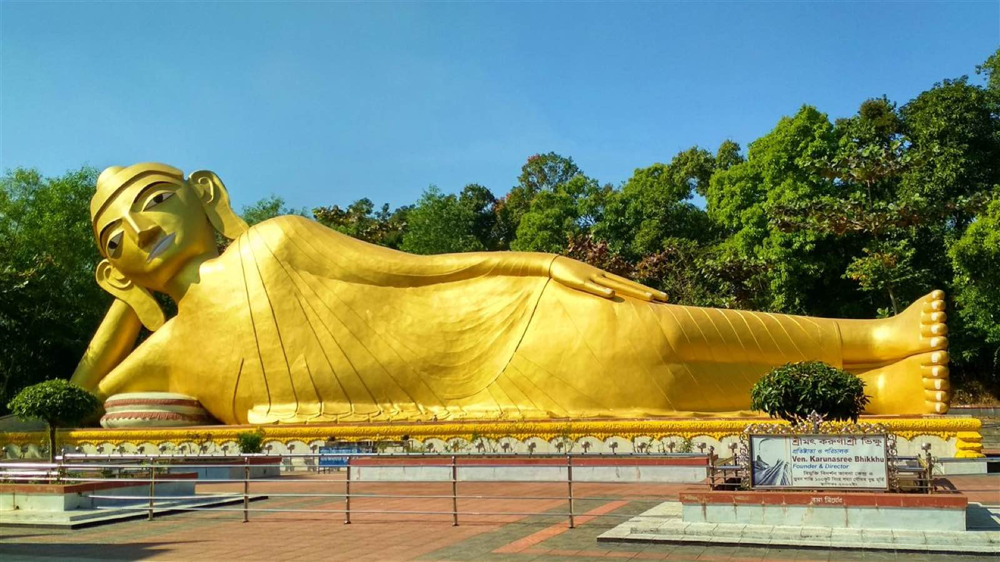
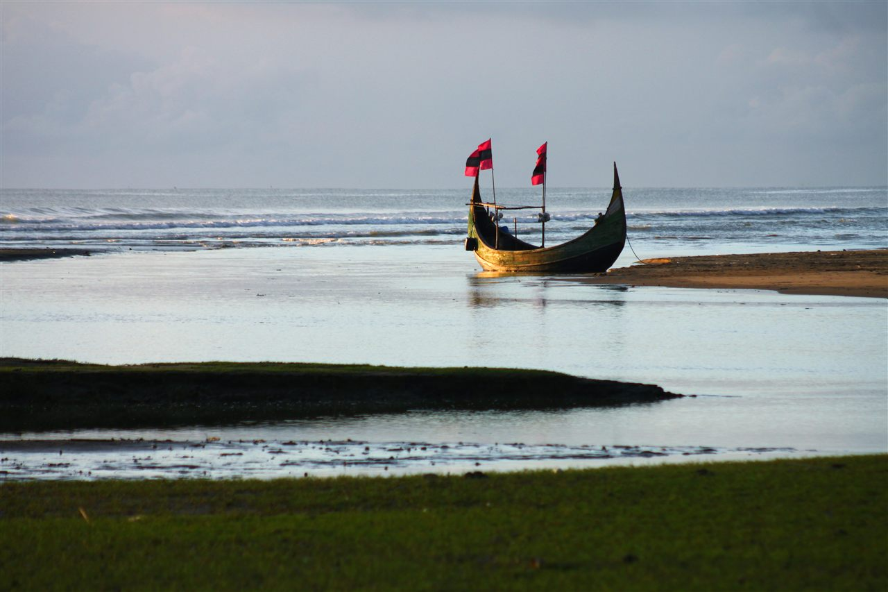

Soul of the Coast.
Beyond the waves lies a rich tapestry of centuries-old Rakhine craftsmanship, Buddhist pagodas, hand-carved wooden Sampans, and communal seafaring traditions.
The Rakhine Community & Aggameda Khyang
The Rakhine people settled in southern Bangladesh around the late 18th century, bringing with them a profound Theravada Buddhist culture, intricate wooden temple architecture, and world-class textile traditions.
At the heart of Cox's Bazar town stands Aggameda Khyang, an ancient monastery resting upon massive teakwood pillars. Inside, visitors can observe bronze Buddha statues, centuries-old Buddhist palm-leaf manuscripts, and hand-cast bell shrines.
Rakhine Handloom Weaving Village
Walk through Buddhist Temple Road to see women artisans operating traditional wooden pit-looms, crafting colourful lungis, silk scarves, and handmade shoulder bags.
Mahamuni & Ramkoot Pagodas
Historic hillside shrines where devotees offer fresh marigold garlands and burn sandalwood incense during full moon prayer cycles.

Ramu & The 100-Foot Reclining Buddha
Located 16 km east of Cox's Bazar town along the Bakkhali River, Ramu is renowned as Bangladesh’s foremost Buddhist sanctuary, home to over 35 historic monasteries (Khyangs) and sacred pagodas.
At Vimukti Bidarshan Bhabna Kendra in North Mithachhari, visitors are greeted by the magnificent 100-foot Golden Reclining Gautama Buddha statue—the largest in the nation—depicting the Buddha entering final Parinirvana with peaceful grace.
The Crescent Sampan & Fishery Heritage
The iconic wooden Sampan—with its distinctive upturned crescent bow and stern—is an architectural marvel of Bengal seafaring. Built by generational shipwrights without blueprints, these boats are engineered to surf directly onto shallow sandy beaches against heavy ocean breakers.
Every morning at Fishery Ghat, deep-sea trawlers dock with hundreds of tons of fresh Bay of Bengal catch: giant silver pomfrets, tiger prawns, and king mackerel. Watch cooperative fishermen repair their handmade monofilament nets on the docks.

The Responsible Traveler Code for Cox's Bazar
Honor local customs and help protect the delicate coastal ecosystems so future generations can experience their beauty.
Remove shoes and hats before entering monastery prayer courtyards. Wear clothing that covers shoulders and knees. Keep voices low in meditation spaces.
Public beaches (Laboni, Sugandha, Kolatoli) are family-centric. T-shirts and shorts or leggings are customary for swimming. Swim strictly in lifeguard-monitored green zones.
Always request polite permission before photographing local fishermen pulling nets, artisans at handlooms, or workers at Nazirartek dried fish yards.
Never break, step on, or purchase dead coral boulders at Inani Beach. Do not shine flashlights on nesting Olive Ridley sea turtles at Sonadia Island.